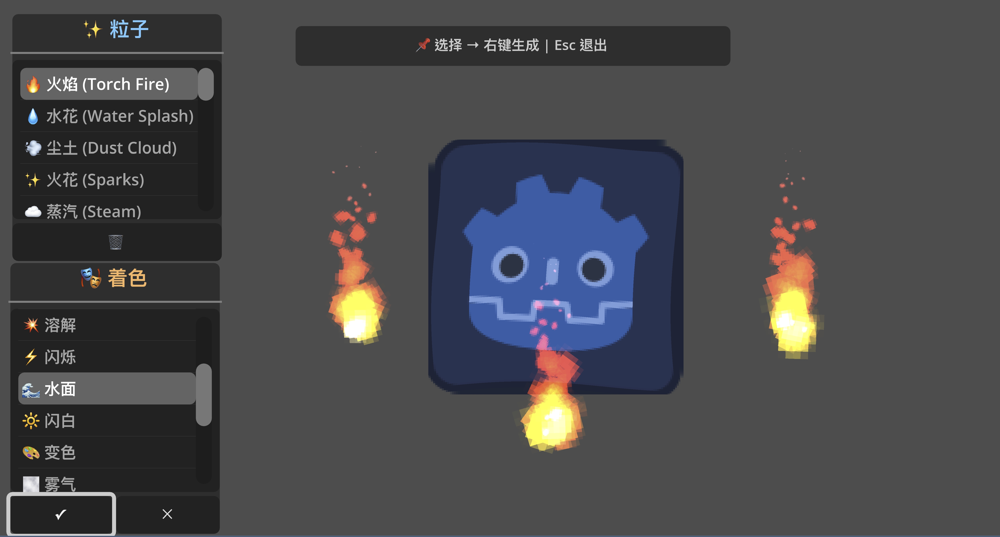

血液飞溅
blood_splash
单次
res://assets/effect/godot_vfx_library/effects/combat/blood_splash.tscn
30 个粒子场景 · 24 个着色器 · 4 张贴图。按用途整理，保留英文文件名。
在 Godot 打开 res://assets/effect/godot_vfx_library/demo/vfx_demo.tscn 按 F6：选择粒子后右键生成，选择着色器后点 ✓ 应用。

blood_splash
单次
res://assets/effect/godot_vfx_library/effects/combat/blood_splash.tscn
combat_particle
单次
res://assets/effect/godot_vfx_library/effects/combat/combat_particle.tscn
combo_ring
单次
res://assets/effect/godot_vfx_library/effects/combat/combo_ring.tscn
energy_burst
单次
res://assets/effect/godot_vfx_library/effects/combat/energy_burst.tscn
heal_particles
持续
res://assets/effect/godot_vfx_library/effects/combat/heal_particles.tscn
shield_break
单次
res://assets/effect/godot_vfx_library/effects/combat/shield_break.tscn
dash_trail
持续
res://assets/effect/godot_vfx_library/effects/movement/dash_trail.tscn
jump_dust
单次
res://assets/effect/godot_vfx_library/effects/movement/jump_dust.tscn
wall_slide_spark
持续
res://assets/effect/godot_vfx_library/effects/movement/wall_slide_spark.tscn
fireball_trail
持续
res://assets/effect/godot_vfx_library/effects/magic/fireball_trail.tscn
ice_frost
单次
res://assets/effect/godot_vfx_library/effects/magic/ice_frost.tscn
lightning_chain
单次
res://assets/effect/godot_vfx_library/effects/magic/lightning_chain.tscn
magic_aura
持续
res://assets/effect/godot_vfx_library/effects/magic/magic_aura.tscn
poison_cloud
持续
res://assets/effect/godot_vfx_library/effects/magic/poison_cloud.tscn
portal_vortex
持续
res://assets/effect/godot_vfx_library/effects/magic/portal_vortex.tscn
summon_circle
持续
res://assets/effect/godot_vfx_library/effects/magic/summon_circle.tscn
ash_particles
持续
res://assets/effect/godot_vfx_library/effects/environment/ash_particles.tscn
campfire_smoke
持续
res://assets/effect/godot_vfx_library/effects/environment/campfire_smoke.tscn
candle_flame
持续
res://assets/effect/godot_vfx_library/effects/environment/candle_flame.tscn
dust_cloud
单次
res://assets/effect/godot_vfx_library/effects/environment/dust_cloud.tscn
falling_leaves
持续
res://assets/effect/godot_vfx_library/effects/environment/falling_leaves.tscn
fireflies
持续
res://assets/effect/godot_vfx_library/effects/environment/fireflies.tscn
sparks
单次
res://assets/effect/godot_vfx_library/effects/environment/sparks.tscn
steam
单次
res://assets/effect/godot_vfx_library/effects/environment/steam.tscn
torch_fire
持续
res://assets/effect/godot_vfx_library/effects/environment/torch_fire.tscn
water_splash
单次
res://assets/effect/godot_vfx_library/effects/environment/water_splash.tscn
wood_debris
单次
res://assets/effect/godot_vfx_library/effects/environment/wood_debris.tscn
rain_drops
持续
res://assets/effect/godot_vfx_library/effects/weather/rain_drops.tscn
snow_flakes
持续
res://assets/effect/godot_vfx_library/effects/weather/snow_flakes.tscn
waterfall_mist
持续
res://assets/effect/godot_vfx_library/effects/weather/waterfall_mist.tscn
blink
在 ShaderMaterial 中调整参数 · 参数：blink_speed, min_alpha
res://assets/effect/godot_vfx_library/shaders/status/blink.gdshader
burning
纹理参数：distortion_texture · 参数：burn_amount, fire_color1, fire_color2, distortion_texture, distortion_strength
res://assets/effect/godot_vfx_library/shaders/status/burning.gdshader
color_change
在 ShaderMaterial 中调整参数 · 参数：target_color, mix_amount, preserve_luminance
res://assets/effect/godot_vfx_library/shaders/status/color_change.gdshader
dissolve
纹理参数：dissolve_texture · 参数：dissolve_amount, dissolve_texture, edge_color, edge_width
res://assets/effect/godot_vfx_library/shaders/status/dissolve.gdshader
enemy
在 ShaderMaterial 中调整参数 · 参数：blur_amount, shake_intensity, white_intensity, time
res://assets/effect/godot_vfx_library/shaders/status/enemy.gdshader
flash_white
在 ShaderMaterial 中调整参数 · 参数：flash_amount, flash_color
res://assets/effect/godot_vfx_library/shaders/status/flash_white.gdshader
frozen
纹理参数：ice_texture · 参数：freeze_amount, ice_color, ice_texture, crystal_intensity
res://assets/effect/godot_vfx_library/shaders/status/frozen.gdshader
invisibility
纹理参数：distortion_texture · 参数：invisibility_amount, distortion_amount, distortion_texture
res://assets/effect/godot_vfx_library/shaders/status/invisibility.gdshader
outline_glow
在 ShaderMaterial 中调整参数 · 参数：outline_color, outline_width, glow_intensity
res://assets/effect/godot_vfx_library/shaders/status/outline_glow.gdshader
petrify
纹理参数：crack_texture · 参数：petrify_amount, stone_color, crack_texture, crack_intensity
res://assets/effect/godot_vfx_library/shaders/status/petrify.gdshader
poison
在 ShaderMaterial 中调整参数 · 参数：poison_amount, poison_color, pulse_speed
res://assets/effect/godot_vfx_library/shaders/status/poison.gdshader
blur_amount
在 ShaderMaterial 中调整参数 · 参数：blur_amount
res://assets/effect/godot_vfx_library/shaders/screen/blur_amount.gdshader
chromatic_aberration
在 ShaderMaterial 中调整参数 · 参数：aberration_amount, aberration_direction
res://assets/effect/godot_vfx_library/shaders/screen/chromatic_aberration.gdshader
fog
纹理参数：noise_texture · 参数：noise_texture, density, speed
res://assets/effect/godot_vfx_library/shaders/screen/fog.gdshader
grayscale
在 ShaderMaterial 中调整参数 · 参数：grayscale_amount, luminance_weights
res://assets/effect/godot_vfx_library/shaders/screen/grayscale.gdshader
radial_blur
在 ShaderMaterial 中调整参数 · 参数：blur_strength, blur_center, samples
res://assets/effect/godot_vfx_library/shaders/screen/radial_blur.gdshader
shake_intensity
在 ShaderMaterial 中调整参数 · 参数：time, shake_intensity
res://assets/effect/godot_vfx_library/shaders/screen/shake_intensity.gdshader
vignette
在 ShaderMaterial 中调整参数 · 参数：vignette_strength, vignette_size, vignette_color
res://assets/effect/godot_vfx_library/shaders/screen/vignette.gdshader
heat_distortion
纹理参数：noise_texture · 参数：distortion_speed, distortion_amount, noise_texture
res://assets/effect/godot_vfx_library/shaders/environment/heat_distortion.gdshader
starSky
纹理参数：small_stars_texture, large_stars_texture；保留 Brian Smith 的 MIT 署名；适用于 ColorRect · 参数：dimensions, small_stars, small_stars_far_size, small_stars_near_size, large_stars, large_stars_far_size, large_stars_near_size, far_stars_color, near_stars_color, small_stars_texture, large_stars_texture, base_scroll_speed, additional_scroll_speed
res://assets/effect/godot_vfx_library/shaders/environment/starSky.gdshader
water
纹理参数：noise_texture, noise_texture2, SCREEN_TEXTURE · 参数：level, water_albedo, water_opacity, water_speed, wave_distortion, wave_multiplyer, water_texture_on, reflection_X_offset, reflection_Y_offset, noise_texture, noise_texture2, SCREEN_TEXTURE, pixel_resolution_x, pixel_resolution_y, edge_fade_width
res://assets/effect/godot_vfx_library/shaders/environment/water.gdshader
water_surface
在 ShaderMaterial 中调整参数 · 参数：wave_direction, wave_speed, wave_frequency, wave_amplitude, water_tint
res://assets/effect/godot_vfx_library/shaders/environment/water_surface.gdshader
energy_barrier
在 ShaderMaterial 中调整参数 · 参数：hex_scale, barrier_color, pulse_speed, edge_brightness
res://assets/effect/godot_vfx_library/shaders/magic/energy_barrier.gdshader
portal_vortex
在 ShaderMaterial 中调整参数 · 参数：vortex_speed, vortex_strength, portal_color1, portal_color2
res://assets/effect/godot_vfx_library/shaders/magic/portal_vortex.gdshader
fire_particle
res://assets/effect/godot_vfx_library/textures/fire_particle.png
firefly
res://assets/effect/godot_vfx_library/textures/firefly.png
leaf
res://assets/effect/godot_vfx_library/textures/leaf.png
spark_particle2
res://assets/effect/godot_vfx_library/textures/spark_particle2.png